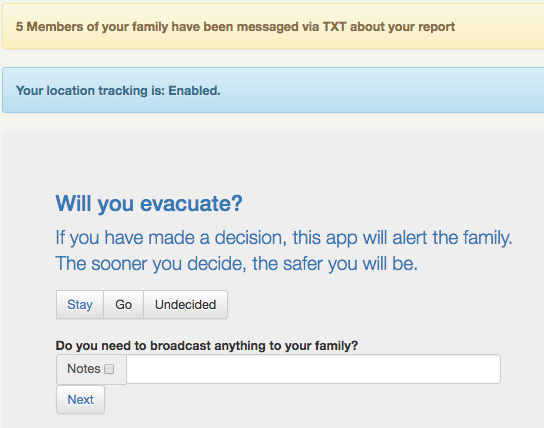
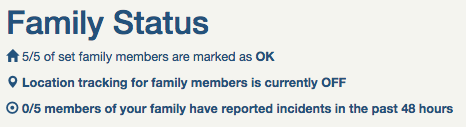
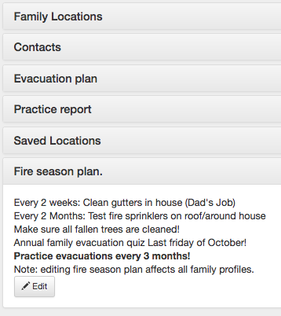
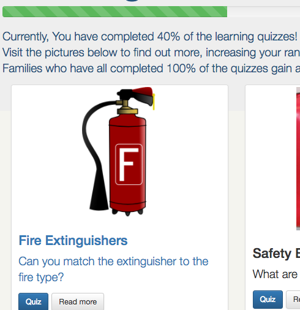
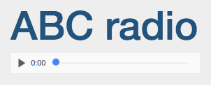
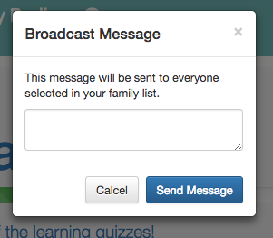

From the homepage, you are given four options:
This is a fast way of notifying loved ones about your situation
A simple survey will allow you to answer the following questions with ease:
What are you reporting
Where is it?
Are you okay?
Will you evacuate?, and
What is your destination?
Each report is timestamped, being sent to your immediate family.
In addition to this, your community will be able to see this info online.
Reporting triggers your location sharing to active.
Image: User inputting data to the report
This section is for monitoring all the data that Wildfire scrapes from other sources, including other users.
These data sources include the Sentinel Infrared Fire Detection Satellite map, CFS radio scanner, an ABC Emergency Twitter feed as well as information on your family and neighbourhood.
This includes whether anyone in your family has made a report recently, whether anyone has reported that they’re not safe, whether anyone in your vicinity has reported an incident, local Fire Danger rating and other important information.
Reports are displayed visually on a map, helping people to understand events in their area in real time as reports come in.
This information is all collated on one page so people can process this information in context, helping them in their decision making.
Image: The first item of status focusses on your family

This is your family guide, with tailored information visible only to you.
Family locations:
For any family members with locations enabled, you are able to see their last known location on an easy to use map.
Contacts:
Having your family contacts available to you through this application allows access to those you love the most, no matter who's device you are on.
Evacuation plan:
Mum: Get animals
Dad: Prepare car
Editable by the entire family, the evacuation plan can give everyone ease of mind, when wondering what will need to be done.
Practice report:
You don't get a chance to practice calling 000. It can be scary when the situation comes, especially for children. This app gives a chance for users to run a simulation report.
Saved Locations:
Grandma's House, Home, work? remembering these addresses is tough for those easily distracted in high pressure situations. Now, you don't have to. Parents can load prominent locations (such as safe houses, and evacuation locations into a usable list for reporting)
Rapid numbers (equivalent of a number plate, for houses) are a succinct way for South Australian rural houses to let the fire service know of their location. Most residents in the hills will have a hard time remembering their rapid number. Set it once, and it's located easily within this app forever.
Fire season plan:
Preperation saves lives. List the things that you and your family will need to do in preparation for the fire season every year.
Image: Collapsible panels containing your family data

This section is to build fire safety and awareness amongst users, as well as helping users become familiar with the app.
Topics such as Bushfire Preparation, Fire Extinguisher use, and How to Stay Safe in a Bushfire. These topics are accompanied by quizzes, which both helps knowledge retention and also adds a competitive edge to encourage people to complete more quizzes.
Results are shown relative to other results in their community as a whole, so while the results are anonymous to anyone other than the user, there is still a comparison factor to encourage people to increase their knowledge.
Image: The fun environment for children to learn fire safety
The functions provided within the top navbar are described below
This simply features a stream of the ABC Emergency Radio, so people can stay informed even if they need to step away from their device.
Image: Interface for radio
If you merely need to send a text message to your family in a convenient place, this app has your back.
Clicking on the loudspeaker icon from the navigation bar at any time shows a text field for your message to be composed.
Image: The simple report interface
Wildfire is an all-in-one safety tool, to help you in the scenario of a fire.
A back-end for communities to create their own fire messaging service is only a week of coding away! This will allow the app to be used outside of South Australia. This results in the resources aiding in the safety for your family to be in one place, no matter what place you're in.